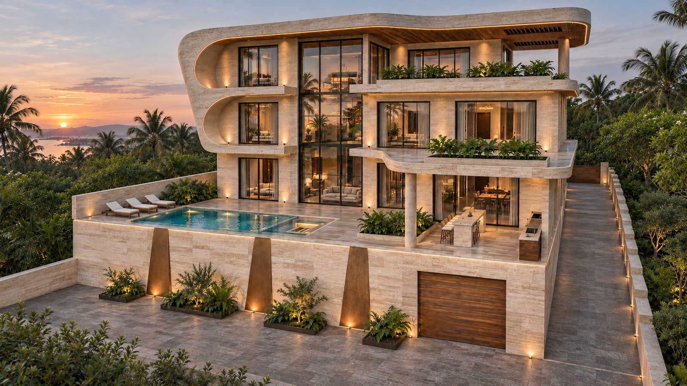
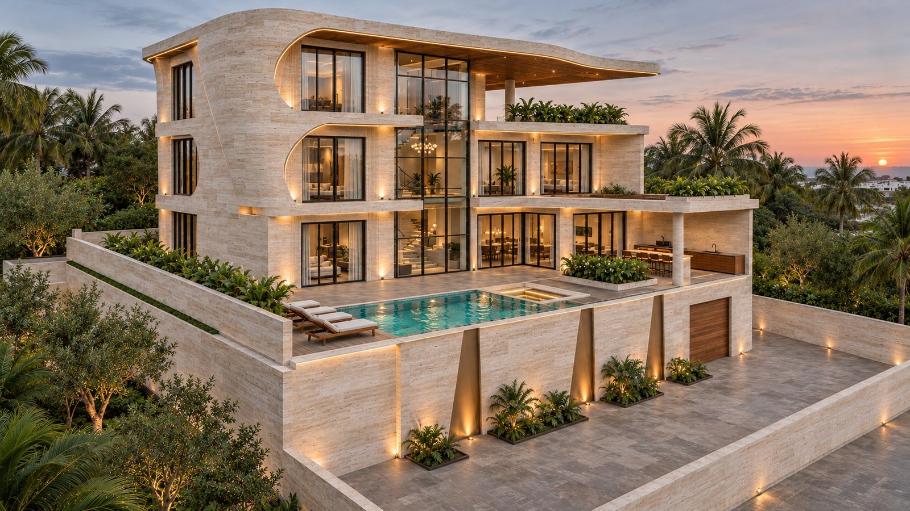

Kendi evinizi yaptırmak, hem en heyecan verici hem de en çok soru işareti doğuran kararlardan biridir. Hangi arsayı almalı, ne kadar büyük bir ev yapılabilir, ruhsat için neler gerekir, süreç ne kadar sürer? Bu rehberde, bir villa ya da müstakil evin arsadan anahtar teslime kadar geçtiği adımları sade bir dille anlatıyoruz.
Hayalinizdeki evi belirleyen ilk şey arsanın kendisi değil, imar durumudur. İmar durumu belgesi, o parselde ne kadar ve nasıl bir yapı yapılabileceğini gösterir. Arsa satın almadan önce mutlaka şu bilgilere bakın:
İmar durumunu birçok belediyenin e-imar sisteminden ada/parsel numarasıyla sorgulayabilirsiniz; resmi belge ise belediyenin imar biriminden alınır. Arsayı almadan önce bir mimara “bu arsaya nasıl bir ev sığar?” sorusunu sordurmak, sonradan yaşanacak büyük hayal kırıklıklarının önüne geçer.
Tasarıma başlamadan önce evin nasıl yaşanacağını konuşmak gerekir: Kaç yatak odası olacak? Ebeveyn banyosu, çalışma odası, misafir odası, kiler, çamaşır odası gerekiyor mu? Açık mutfak mı, kapalı mutfak mı? Havuz, şömine, otopark, asansör düşünülüyor mu?
Bu listeyi bütçeyle birlikte düşünmek önemlidir. İnşaat maliyetini en çok belirleyen kalemler; toplam inşaat alanı, bodrum kat olup olmaması, cephe malzemeleri, doğrama ve ince iş malzemelerinin seviyesidir. Beklenmedik durumlar için toplam bütçenin bir kısmını yedek olarak ayırmak her zaman akıllıca bir karardır.
İhtiyaç programı netleşince mimar, imar şartları içinde plan alternatiflerini hazırlar: odaların yerleşimi, gün ışığı, manzara yönü, bahçe ilişkisi ve cephe dili bu aşamada şekillenir.

Bugün fotogerçekçi 3D render ve videolar sayesinde evinizi daha temeli atılmadan görebilirsiniz. Cephe rengi, taş kaplama, doğrama rengi, havuzun yeri gibi kararları inşaat sırasında değil, bu aşamada vermek hem zamandan hem paradan tasarruf sağlar. İnşaat başladıktan sonra yapılan her değişiklik çok daha pahalıya mal olur.
Tasarım onaylandıktan sonra, belediyeye sunulacak uygulama projeleri hazırlanır. Bir konut için genellikle şu projeler ve raporlar gerekir:
Bu projelerin birbiriyle uyumlu olması çok önemlidir. Mimari projede bir kolon yeri değiştiğinde statik projenin, bir banyo yer değiştirdiğinde tesisat projesinin de güncellenmesi gerekir. Proje koordinasyonunu tek elden yürütmek, belediyede düzeltme turlarını ve şantiyede sürprizleri azaltır.
Yapı ruhsatı, inşaata başlamanın yasal ön şartıdır. Belediyeye yapılan başvuruda istenen belgeler idareden idareye küçük farklılıklar gösterse de genellikle şunları içerir:
Projeler önce yapı denetim kuruluşu tarafından incelenir, ardından belediye imar birimi kontrol eder; eksik yoksa harçlar yatırılır ve ruhsat düzenlenir. Ruhsat süreçleri giderek dijitalleşmektedir: Çevre, Şehircilik ve İklim Değişikliği Bakanlığı, projelerin Elektronik Proje Yönetim Sistemi (e-PYS) üzerinden ve yapı bilgi modellemesi (BIM) standartlarına uygun hazırlanıp teslim edilmesine yönelik yönetmelikleri 2026'da yayımladı. Bu sistem kademeli olarak devreye giriyor; projenizi hazırlayan ofisin bu sürece hazır olması avantaj sağlar.
Ruhsat alındıktan sonra inşaat başlar. Süreç kabaca şu aşamalardan oluşur:
İnşaat boyunca yapı denetim kuruluşu, yapının projeye ve yönetmeliklere uygun yapılıp yapılmadığını denetler; beton dökümü gibi kritik aşamalar kontrol edilmeden ilerlenemez. Yine de işveren olarak sizin tarafınızda da projeyi bilen birinin şantiyeyi takip etmesi, malzeme ve detayların tasarlandığı gibi uygulanmasını sağlar.
İnşaat bittiğinde yapının ruhsat ve eklerine uygun tamamlandığını gösteren yapı kullanma izin belgesi, yaygın adıyla iskân alınır. Elektrik, su ve doğalgaz aboneliklerinin kalıcı hâle gelmesi ve tapuda “arsa” vasfının “kat mülkiyeti” ya da “bina” olarak güncellenmesi için iskân gerekir. Projeye aykırı yapılan değişiklikler iskân aşamasında sorun çıkarır; bu yüzden şantiyede yapılacak her değişikliğin önce projeye işlenmesi gerekir.
Projeye, arsanın durumuna ve belediye sürecine göre değişir. Tasarım ve ruhsat aşaması genellikle birkaç ay, inşaat ise yapının büyüklüğüne ve iş programına bağlı olarak bir yıl ya da daha uzun sürebilir. İlk görüşmede projeye özel bir takvim çıkarmak en sağlıklısıdır.
Bunu imar durumu belgesindeki kat adedi / bina yüksekliği, emsal ve çekme mesafeleri belirler. Ada ve parsel numaranızla imar durumunu inceleyip size yapılabilecek ev büyüklüğünü çıkarabiliriz.
Genellikle tapu, imar durumu, aplikasyon krokisi, mimari-statik-mekanik-elektrik projeler, zemin etüt raporu ve yapı denetim sözleşmesi istenir. Liste belediyeye göre küçük farklılıklar gösterebilir.
Evet. Fotogerçekçi 3D render ve videolarla evin iç ve dış mekânlarını inşaat başlamadan görebilir, malzeme ve renk kararlarını önceden verebilirsiniz.
Bu konuda profesyonel destek almak isterseniz Villa ve Müstakil Ev Projesi hizmetimiz sayfasını inceleyebilirsiniz.
Arsanızı, binanızı ya da hayalinizdeki mekânı anlatın; size nasıl bir yol izleyebileceğimizi birlikte konuşalım.